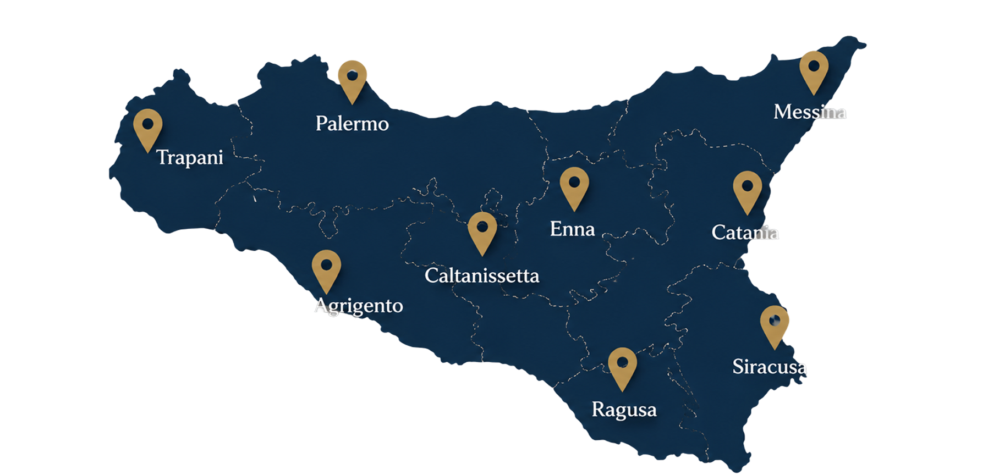

Le Piazze del
Duomo in Sicilia
Un viaggio dedicato alle piazze dei capoluoghi siciliani che ospitano la Cattedrale fulcro storico, urbanistico e religioso.
Esplora le piazzeUn viaggio dedicato alle piazze dei capoluoghi siciliani che ospitano la Cattedrale fulcro storico, urbanistico e religioso.
Esplora le piazzeIl sito raccoglie e organizza una selezione di piazze principali e secondarie dei principali spazi urbani delle provincie siciliane, luoghi simbolo della vita religiosa, civile e culturale dell’isola.

Spazio sacro e civile, cuore della vita cittadina e simbolo di rinascita dopo il terremoto del 1693. Le Piazze del Duomo raccontano secoli di storia, arte e comunità.